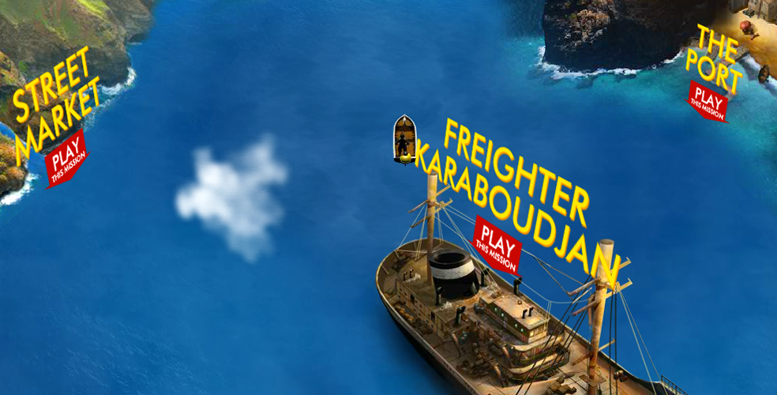

game trailerobjectives
to build an online game to promote the Adventure of Tintin movie directed by Peter Jackson and Steven Spielberg.
role + responsibilities
creative director
- creative lead for the overall ux and playability, as well as leading the ideation and iteration process with the design & development team
- led team of designers and art director, illustrators, 3d modelers/animators, engineers and producer
deliverables in this role includes original game document writing (mechanics, level design, characters attributes, game dynamic, etc.), motion captures script, and play-by-play script.
client
sony pictures | usa
deliverables
- flash-based game with integrated facebook open graph protocol features
- 12 localized builds to fit international marketing campaign
- pre-rendered 3d game with custom motion-capture character animation
- three non-linear missions with corresponding story lines based on the original comic book ‘the secret of the unicorn' and 'the crab with the golden claws’
. . . . .
#trigger, #shanghai, #losangeles, #VideoGames, #CreativeDirection, #ux, #wires, #IA, #GameFlow, #GameMechanic
. . . . .